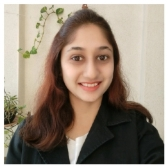

Rasika Sonawane
Software Quality Engineer at Infosys
rasikas9993@gmail.com | https://rasika.net | +91 9373979630
QA Test Analyst with ~4 years of experience
Blog | LinkedIn | Github
To obtain a good position within the company that will allow me to utilize my education, technical skills and work experience for the benefit of the company as well as for personal growth and professional advancement.
April 2025 – Present
Pune, Maharashtra, India
August 2021 – July 2023
1. End to end creation of Test Cases right from User Stories in requirement documents till execution using TestLink application.
2. Documenting different Use cases and Test scenarios.
3. Proactively raising defects in JIRA and retesting them.
4. Performing Functional testing, Smoke testing, Regressi...
Show more
Pune Area, India
August 2018 – March 2020
1.Familiarity with Agile frameworks and Regression testing along with an ability to document and troubleshoot errors
2.Experienced in testing Web-based applications on Desktop, ipad and Tablet.
3. Experienced in preparation, updation and execution of Test Cases.
4. Good exposure to SDLC and STLC.
5....
Show more
Computer Engineering (Master of Engineering)
January 2015 – December 2017
January 2017 – Present
We planned for Social Event where we have managed student registration along with campaigning.Greeted Student and visitors upon arrival to facility and also directed all visitors to various locations within the college.